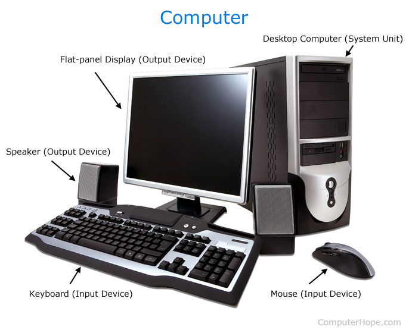
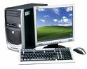
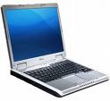
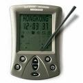
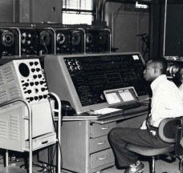

Online Tutorial
Introduction to Computer 
Topic 2
Topics :
Different Types of Computer
Computers can be classified based on their size or capabilities, their principles of operation, their purpose , and their age.
- Types of Computer Based on Purpose
- 1. Special purpose computer is one that is built for a specific application.
- 2. General purpose computers are used for any type of applications. They can store different programs and do the jobs as per the instructions specified on those programs. Most of the computers that we see today, are general purpose computers.
- Types of Computer Based on Principles of Operation
- 1. Analog Computer is a computing device that works on continuous range of values. The results given by the analog computers will only be approximate since they deal with quantities that vary continuously. It generally deals with physical variables such as voltage, pressure, temperature, speed, etc.
- 2. Digital computer operates on digital data such as numbers. It uses binary number system in which there are only two digits 0 and 1. Each one is called a bit.
The digital computer is designed using digital circuits in which there are two levels for an input or output signal. These two levels are known as logic 0 and logic 1. Digital Computers can give more accurate and faster results.
Digital computer is well suited for solving complex problems in engineering and technology. Hence digital computers have an increasing use in the field of design, research and data processing.
- 3. Hybrid computer combines the desirable features of analog and digital computers. It is mostly used for automatic operations of complicated physical processes and machines. Now-a-days analog-to-digital and digital-to-analog converters are used for transforming the data into suitable form for either type of computation.
For example, in hospital’s ICU, analog devices might measure the patients temperature, blood pressure and other vital signs. These measurements which are in analog might then be converted into numbers and supplied to digital components in the system. These components are used to monitor the patient’s vital sign and send signals if any abnormal readings are detected. Hybrid computers are mainly used for specialized tasks.
- Types of Computers based on Size/Capabilities
- 1. Super computers are the best in terms of processing capacity and also the most expensive ones. These computers can process billions of instructions per second. Normally, they will be used for applications which require intensive numerical computations such as stock analysis, weather forecasting etc. Other uses of supercomputers are scientific simulations, (animated) graphics, fluid dynamic calculations, nuclear energy research, electronic design, and analysis of geological data (e.g. in petrochemical prospecting). Perhaps the best known super computer manufacturer is Cray Research. Some of the "traditional" companies which produce super computers are Cray, IBM and Hewlett-Packard.
As of July 2009, the IBM Roadrunner, located at Los Alamos National Laboratory, is the fastest super computer in the world.
- 2. Mainframe was a term originally referring to the cabinet containing the central processor unit or "main frame" of a room-filling Stone Age batch machine. After the emergence of smaller "minicomputer" designs in the early 1970s, the traditional big iron machines were described as "mainframe computers" and eventually just as mainframes. Nowadays a Mainframe is a very large and expensive computer capable of supporting hundreds, or even thousands, of users simultaneously.
Mainframe computers can also process data at very high speeds vi.e., hundreds of million instructions per second and they are also quite expensive. Normally, they are used in banking, airlines and railways etc for their applications.
- 3. Mini computers are lower to mainframe computers in terms of speed and storage capacity. They are also less expensive than mainframe computers. Some of the features of mainframes will not be available in mini computers. Hence, their performance also will be less than that of mainframes.
- 4. The invention of microprocessor (single chip CPU) gave birth to the much cheaper microcomputers. They are further classified into desktop computers, laptop computers, and handheld computers.
Desktop Computers
Today the Desktop computers are the most popular computer systems.These desktop computers are also known as personal computers or simply PCs. They are usually easier to use and more affordable. They are normally intended for individual users for their word processing and other small application requirements.
Laptop Computers
Laptop Computers
Laptop computers are portable computers. They are lightweight computers with a thin screen. They are also called as notebook computers because of their small size. They can operate on batteries and hence are very popular with travellers. The screen folds down onto the keyboard when not in use.
Handheld Computers
Handheld computers or Personal Digital Assistants (PDAs) are pen-based and also battery-powered. They are small and can be carried anywhere. They use a pen like stylus and accept handwritten input directly on the screen. They are not as powerful as desktops or laptops but they are used for scheduling appointments,storing addresses and playing games. They have touch screens which we use with a finger or a stylus.
- Types of Computers Based on Age
- 1. First Generation (1940-1956) Vacuum Tubes
The first computers used vacuum tubes for circuitry and magnetic drums for memory, and were often enormous, taking up entire rooms. They were very expensive to operate and in addition to using a great deal of electricity, generated a lot of heat, which was often the cause of malfunctions.
First generation computers relied on machine language, the lowest-level programming language understood by computers, to perform operations, and they could only solve one problem at a time. Input was based on punched cards and paper tape, and output was displayed on printouts.
The UNIVAC and ENIAC computers are examples of first-generation computing devices. The UNIVAC was the first commercial computer delivered to a business client, the U.S. Census Bureau in 1951.
- 2. General purpose computers are used for any type of applications. They can store different programs and do the jobs as per the instructions specified on those programs. Most of the computers that we see today, are general purpose computers.
- Univac computer at the Census Bureau.
Image Source: United States Census Bureau
- 2. Second Generation (1956-1963) Transistors
Transistors replaced vacuum tubes and ushered in the second generation of computers. The transistor was invented in 1947 but did not see widespread use in computers until the late 1950s. The transistor was far superior to the vacuum tube, allowing computers to become smaller, faster, cheaper, more energy-efficient and more reliable than their first-generation predecessors. Though the transistor still generated a great deal of heat that subjected the computer to damage, it was a vast improvement over the vacuum tube. Second-generation computers still relied on punched cards for input and printouts for output.
Second-generation computers moved from cryptic binary machine language to symbolic, or assembly, languages, which allowed programmers to specify instructions in words. High-level programming languages were also being developed at this time, such as early versions of COBOL and FORTRAN. These were also the first computers that stored their instructions in their memory, which moved from a magnetic drum to magnetic core technology.
The first computers of this generation were developed for the atomic energy industry.
- 3. Third Generation (1964-1971) Integrated Circuits
The development of the integrated circuit was the hallmark of the third generation of computers. Transistors were miniaturized and placed on silicon chips, called semiconductors, which drastically increased the speed and efficiency of computers.
Instead of punched cards and printouts, users interacted with third generation computers through keyboards and monitors and interfaced with an operating system, which allowed the device to run many different applications at one time with a central program that monitored the memory. Computers for the first time became accessible to a mass audience because they were smaller and cheaper than their predecessors.
- 4. Fourth Generation (1971-Present) Microprocessors
The microprocessor brought the fourth generation of computers, as thousands of integrated circuits were built onto a single silicon chip. What in the first generation filled an entire room could now fit in the palm of the hand. The Intel 4004 chip, developed in 1971, located all the components of the computer—from the central processing unit and memory to input/output controls—on a single chip.
In 1981 IBM introduced its first computer for the home user, and in 1984 Apple introduced the Macintosh. Microprocessors also moved out of the realm of desktop computers and into many areas of life as more and more everyday products began to use microprocessors.
As these small computers became more powerful, they could be linked together to form networks, which eventually led to the development of the Internet. Fourth generation computers also saw the development of GUIs, the mouse and handheld devices.
- 5. Fifth Generation (Present and Beyond) Artificial Intelligence
Fifth generation computing devices, based on artificial intelligence, are still in development, though there are some applications, such as voice recognition, that are being used today. The use of parallel processing and superconductors is helping to make artificial intelligence a reality. Quantum computation and molecular and nanotechnology will radically change the face of computers in years to come. The goal of fifth-generation computing is to develop devices that respond to natural language input and are capable of learning and self-organization.